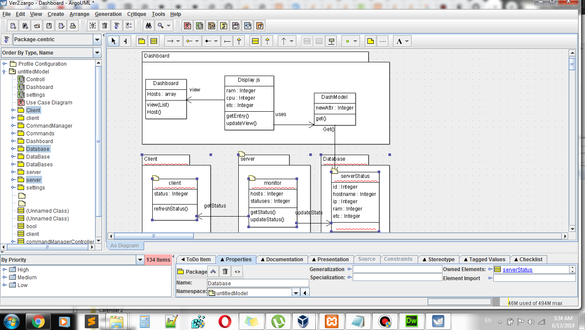
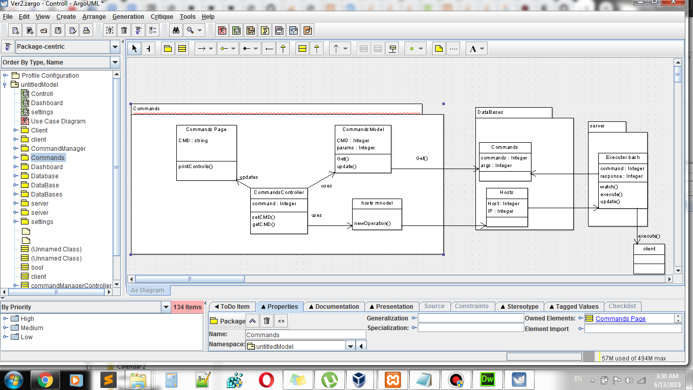
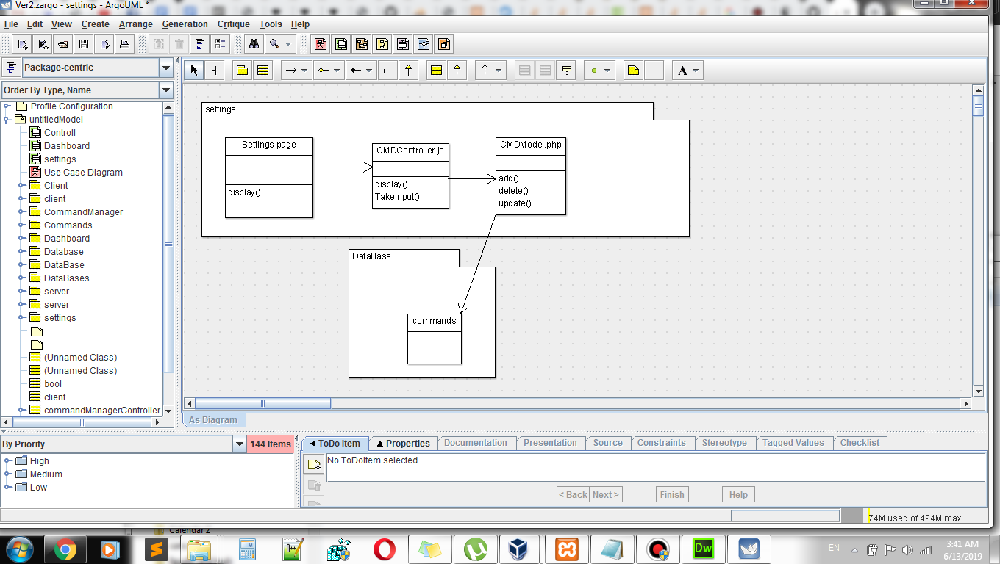
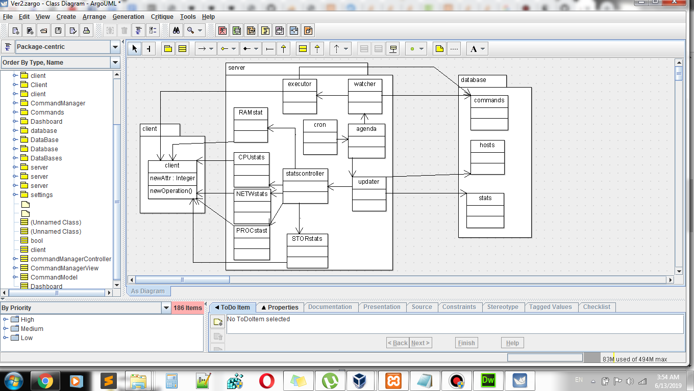
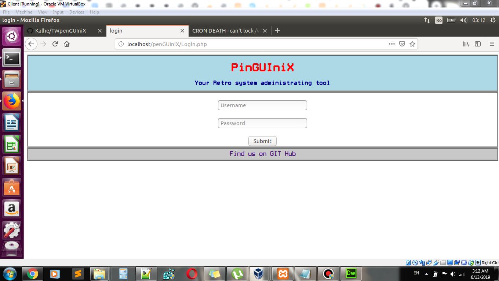
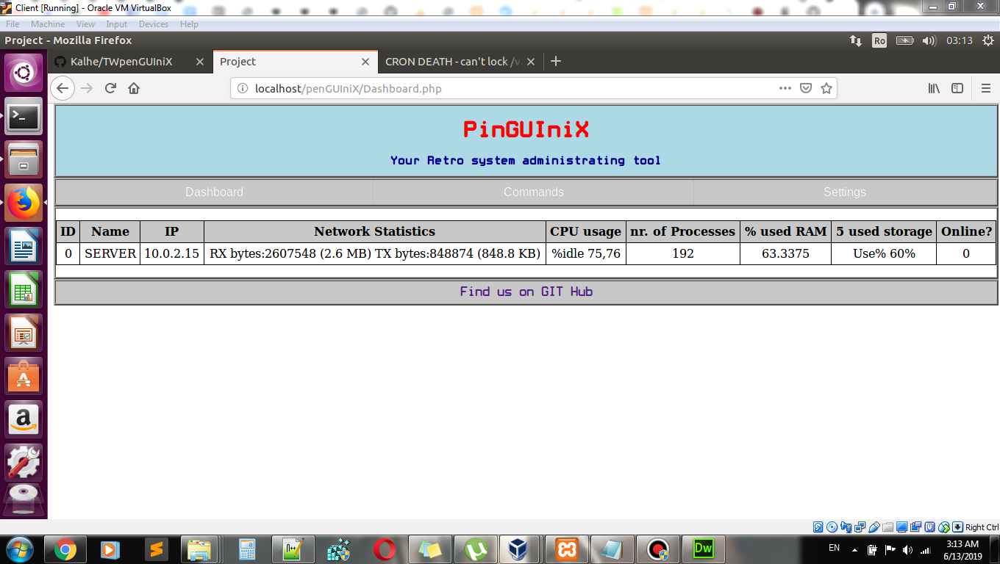
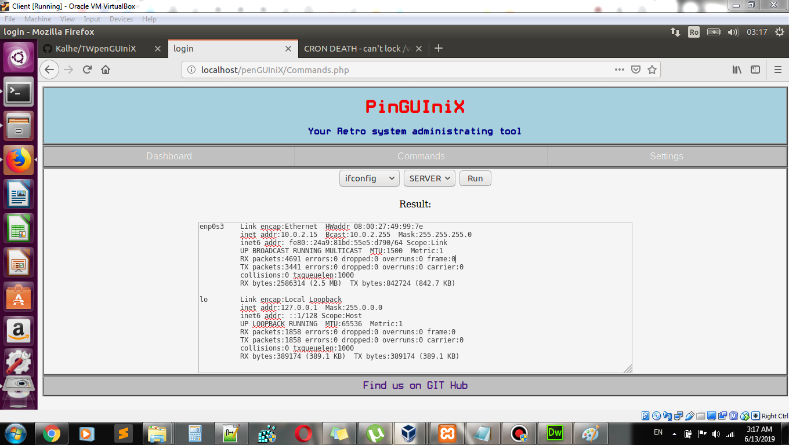
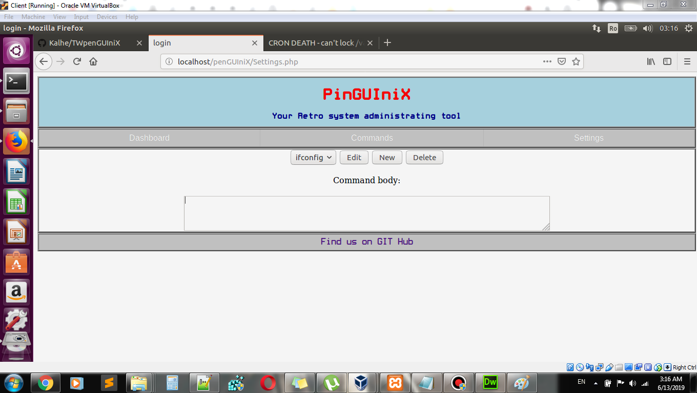

penGUIniX
- Magureanu Andrei-Paul
Cuprins:
1) Introducere
Aplicatia penGUIniX este un tool de management si monitorizare a sistemelor de masini linux. Oferind utilizatorului posibilitatea de a vizualiza in timp real date de sistem cat si a executa comenzi remote, penGUIniX simplifica mult administrarea retelei tale locale!2) Tehnologii utilizate
Pentru implementare proiectului am folosit HyperText Transfer Protocol. Pentru stilizarea experientei utilizatorului vom folosi Cascading Style Sheets cu ultima sa versiune. Pentru managementul informatiei am folosit bazele de date MySQL . Interfata Web va consta din incarcarea in paginile HTML a elementelor de design din CSS , sustinute de arhitectura in limbajul PHP,dar si JavaScript. Pentru executarea partii de linux, am folosit scripturi bash, colectia de comenzi sysstat si openssh. Serverul ruleaza in mediu apache2.
3) Arhitectura
Aplicatia se imparte in 3 parti. Partea web, partea bash, si baza de date. Pe interfata web, clientul se poate loga (operatie efectuata la nivel sesiune), dupa care dash-boardul i-i va furniza detalii in timp real despre masinile din sistem. Deasemenea, poate emite comenzi masinilor din retea. Comenzile sunt administrate pe pagina setting, unde se pot adauga, edita sau sterge.
Modelul arhitectural este MVC, reprezentand un o arhitectura in care view-ul se ocupa cu afisarea datelor, modelul reprezinta datele si operatiunile efectuate direct peste date, iar controllerul administreaza ambele parti, efectuand peste model operatiuni in functie de nevoile utilizatorului, urmand sa afiseze datele inapoi in view. Concret, view-ul reprezinta interfata html/php+css, model-ul sunt comenzile si statisticile din baza de date si scripturile php care le administreaza , iar controllerul sunt scripturi in JavaScript, care percep comenzile introduse in view, si furnizeaza rezultatul apeland diverse scripturi php din model. Rezultatul comenzilor emise din interfata sunt preluate din baza de date de catre un sistem de scripturi bash, care le executa folosind ssh.
4) Detalii De implementare
Dupa accesarea adresei , va aparea meniul de login . Odata ce datele au fost introduse in meniul de login , se va face o interogare in baza de date daca userul exista,iar daca nu se returneaza nici un row la introducerea datelor,userul va fi promptat sa incerce din nou. In caz contrar, userul va fi redirectionat catre Dashboard.
4.1 Diagrame

Dashboard
Commands
Settings
Diagrama Scripturi Server4.2 Interfata actuala




5)Actori si obiective
Utilizatorul: doreste sa verifice starea masinilor din rete si/sau sa emita comenzi
Interfata : sa afiseze in timp real date despre masinile din sistem si sa permita utilizatorului sa ruleze comenzi si sa vada rezultatul.
Serverul: sa updateze baza de date cu inforatiile necesare si sa ruleze comenzi in retea.
6)Scenarii de utilizare
Următoarele cazuri descriu modul în care lucreaza aplicatia si ce poate ea oferi utilizatorilor:
1. Logarea in aplicatie
1.Userul intra pe pagina de autentificare, unde va fi nevoit sa introduca ussername si parola.
1.a. Daca datele introduse sunt corecte, userul va fi redirectionat catre Dashboard, unde poate vedea n timp real date despre sistem
1.b. Daca credentialele sunt gresite, userul va fi redirectionat la 1.
2. Executarea unei comenzi
1. Utilizatorul va intra pe pagina commands, unde va putea selecta un server si o comanda, urmand apoi sa apese butonul run.
2. Rezultatul comenzii va fi afisat pe pagina, intr-un spatiu de text.
1.3. Administrarea comenzilor
1. Pe pagina Settings, utilizatorul va avea posibilitatea sa adauge, editeze sau sa stearga comenzi din baza de date.
2.a. Utilizatorul poate scrie o comanda in spatiul pentru text, apoi sa apese pe butonul add pentru a o adauga in baza de date
2.b. Utilizatorul poate selecta o comanda, sa o editeze in spatiu text apoi sa apese butonul edit pentru a o modifica.
3. Utilizatorul poate selecta o comanda din baza de date, si apoi sa apese butonul delete pentru a o sterge.
6) Concluzii
Aplicatia ofera o unealta la indemana pentru un administrator de sistem care vrea sa aiba un overview rapid asupra sistemului si un pic de control, dintr-un singur loc. Varianta prezentata este demonstrativa deabia, potentialul penGUIniX fiind inca neatins dar cu o echipa mai mare si niste unelte mai bune ar putea deveni un Zabbix cu puteri de SaltStack!